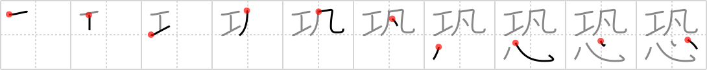

恐
← →
fear

Reading:
On-Yomi: キョウ — Kun-Yomi: おそ.れる、おそ.る、おそ.ろしい、こわ.い、こわ.がる
Heisig story:
Craft . . . mediocre . . . heart.
Koohii stories:
1) [raulir] 27-4-2006(343): If your heart surgeon is mediocre in his craft, you have plenty of reason to fear. ("Oops, I think I left my scissors in there").
2) [mspertus] 9-4-2007(125): My deep dark fear at the bottom of my heart is that I am mediocre at my craft.
3) [darg_sama] 10-7-2006(41): Some have called the US the culture of fear. Fear is a craft that mediocre leaders use to control the hearts of the populace.
4) [Perry] 10-4-2009(29): I have an unusual fear - when I'm sleeping, the mediocre I-beam above my bed will fall and crush my heart. The builder was certainly mediocre, the I-beam is not even quite straight! Could fall any time…
5) [delenir] 7-12-2009(16): Fear will craft a mediocre heart.